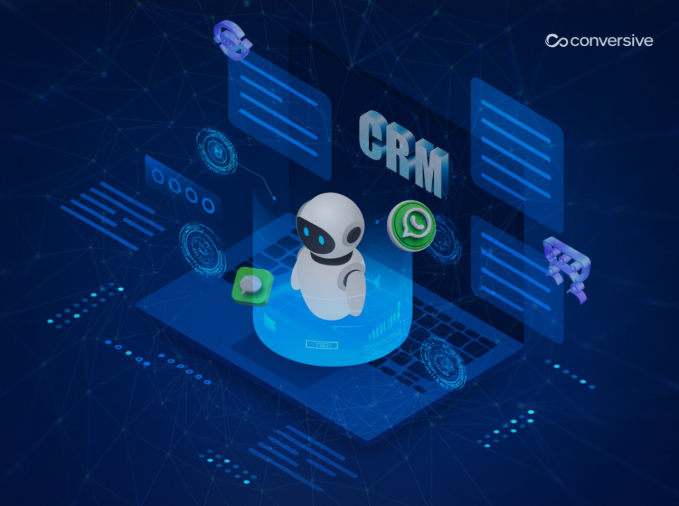

Recruitment Operations
End-to-end recruitment administration: sourcing coordination, screening workflows, interview logistics, offer management and pre-boarding. AI-assisted screening always carries human review before any candidate decision.
.png)
HR Operations
Employee lifecycle administration from onboarding to exit: records management, HR helpdesk, letters and documentation, policy query handling and benefits administration across entities and countries.
Sales Development Operations
Pipeline generation operations: account research, list building, outreach execution with approval gates, inbound qualification and CRM hygiene. Humans own every conversation; the operation keeps the funnel full.
Customer Support Operations
Tier-1 and Tier-2 support delivery across chat, email and voice: triage, resolution, escalation management and knowledge-base upkeep, with quality sampling and CSAT measurement built into the operating rhythm.
Finance & Accounting Operations
AP/AR processing, reconciliations, invoice matching, expense administration and close support. Materiality thresholds and finance sign-off gates keep every number auditable.
IT Service Desk Operations
L1/L2 service desk with 24×7 or follow-the-sun coverage: incident handling, access requests, request fulfilment and problem escalation on your ITSM platform, with privileged actions gated behind human approval.
Data Operations
Data entry, cleansing, enrichment, migration support and quality monitoring. Pipelines monitored, exceptions triaged, and data quality rules enforced so downstream reporting can be trusted.

CRM Operations
CRM administration and hygiene: deduplication, enrichment, pipeline data quality, workflow administration and release support across Salesforce, Dynamics and HubSpot estates.
Procurement Operations
Requisition-to-PO processing, catalogue maintenance, supplier onboarding administration and invoice-query resolution: policy compliance checked on every transaction before commitment.
Compliance Operations
Controls testing support, evidence collection, audit documentation preparation and regulatory task tracking. The AI prepares and flags; compliance officers decide, with a complete audit trail throughout.

Back-Office Operations
Document processing, order administration, claims support, verification workflows and the operational long tail that consumes enterprise attention, run to defined turnaround standards.
GCC Operations Support
The operational backbone for your capability centre: payroll administration, HR operations, compliance documentation, facilities coordination and delivery reporting, whether we built the GCC or you did.
Start with one service line.
Most clients begin with a single operation, prove the KPI model, then expand. Sensible.